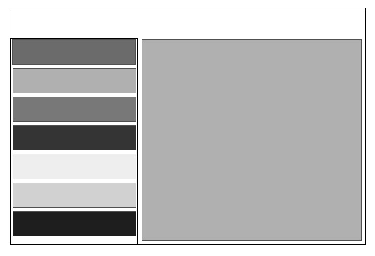

Regardez et reproduisez les videos suivantes.
Démonstration de création étape par étape d'une interface adaptive.
Vous devrez compléter la programmation de votre activité qui gère des interfaces différentes en portrait / paysage.
Créez un projet appelé GrisGris. Vous devez reproduire le layout suivant en mode paysage. En mode portrait, uniquement la liste de gauche doit apparaitre.
Créez un projet appelé GrisGrisFini en faisant une copie du projet précédent.
En mode portrait, appuyer sur un gris doit faire apparaitre une autre activité avec une vue du même gris. En mode paysage, appuyer sur un gris dans la liste doit changer la couleur de la partie droite.